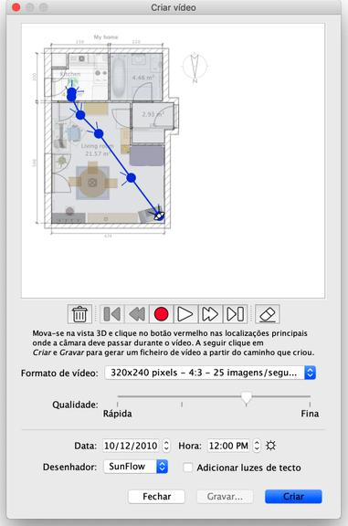

| Criar vídeos | |||
Para criar um vídeo 3D da sua casa, escolha Vista 3D > Criar vídeo... ou clique na ferramenta Criar vídeo. Isto vai abrir uma caixa de diálogo semelhante à de criação criação de fotografias.  No topo da janela aparece a planta da sua casa, sobre a qual vai ser desenhado o caminho do vídeo virtual. Abaixo da planta, os
botões Gravar, Reproduzir e Apagar ajudam a marcar os pontos por onde a câmara deve passar, reproduzir o
caminho gravado ou remover alguns pontos do caminho. Para criar um vídeo, escolha a localização inicial da câmara de vídeona vista 3D da janela principal do
Sweet Home 3D, e clique no botão vermelho na janela de criação de vídeo. Mova-se para a próxima
posição onde a câmara deve passar e clique novamente no botão vermelho. Repita estes passos para todos os pontos
que quer incluir no vídeo |
|